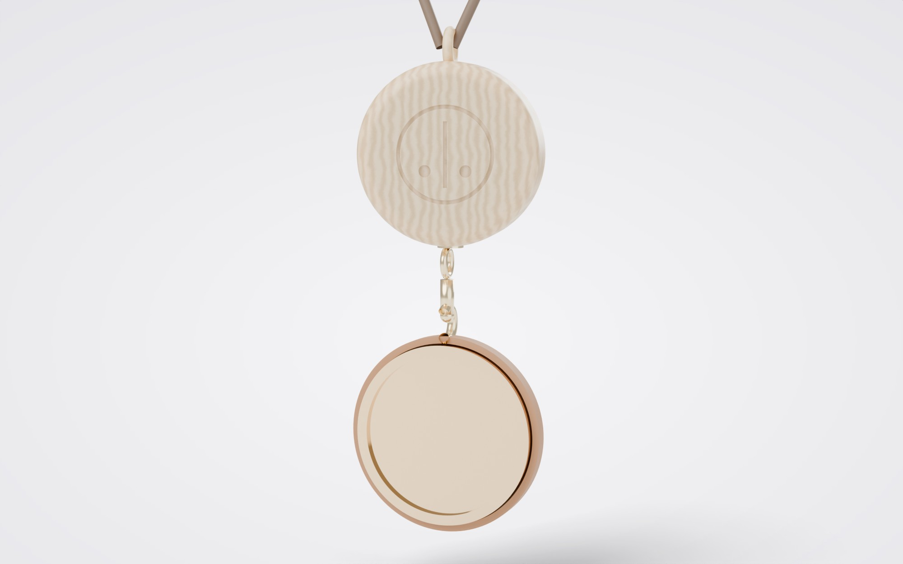
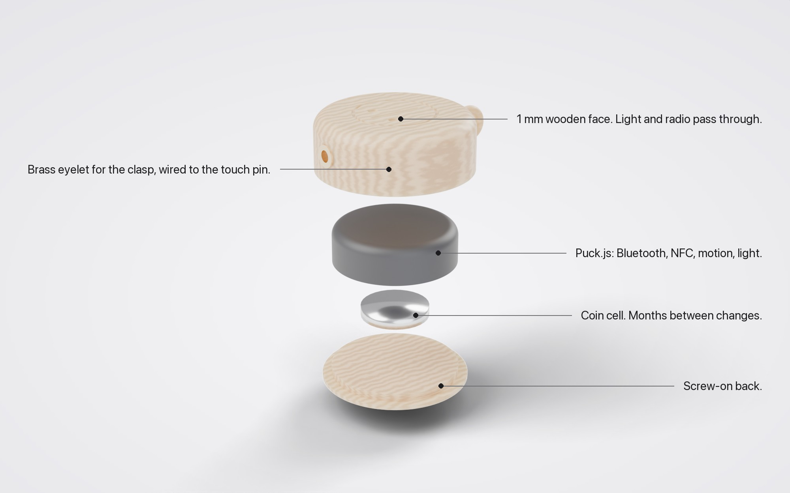
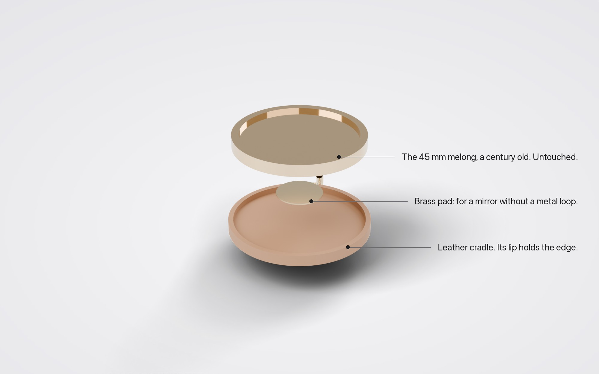
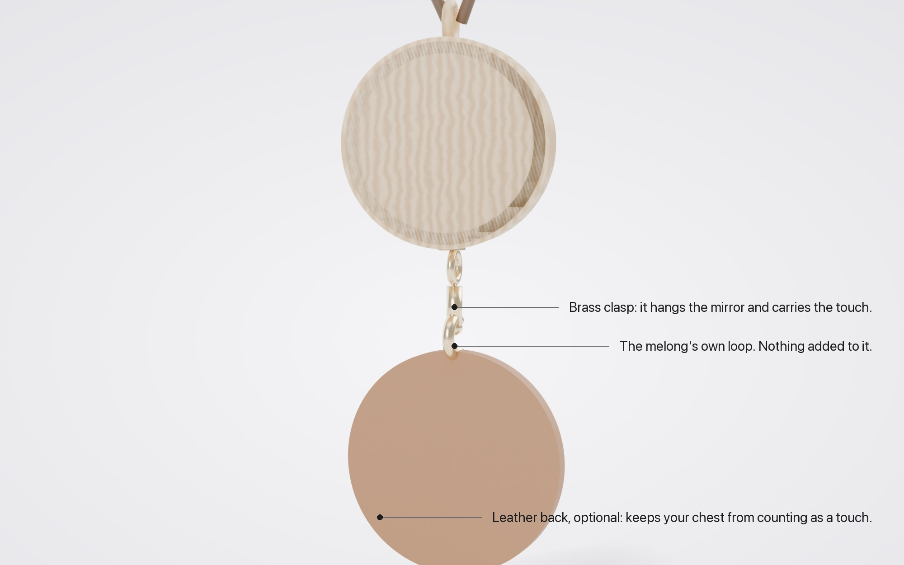
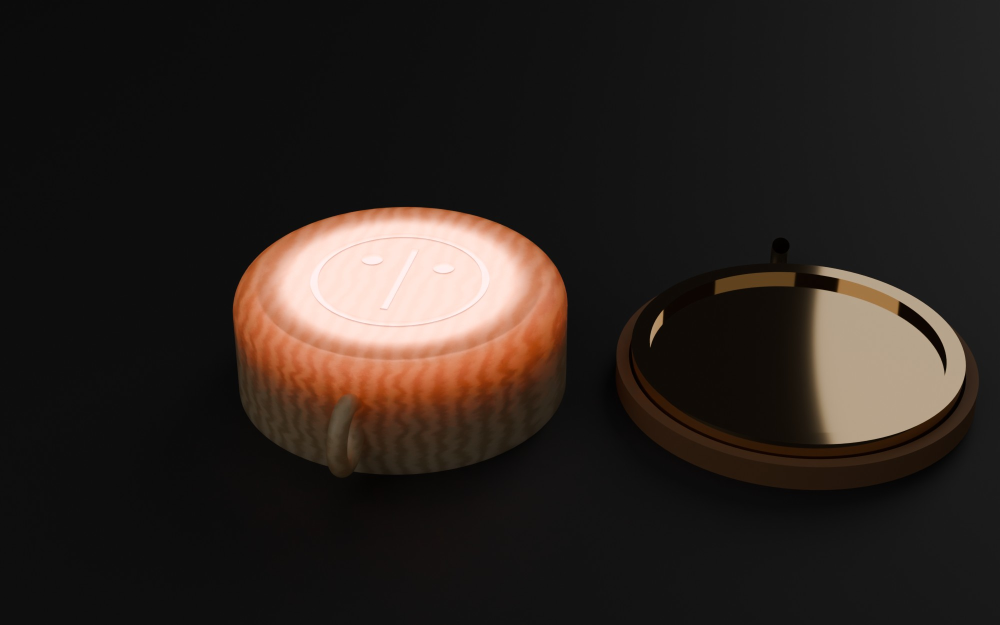
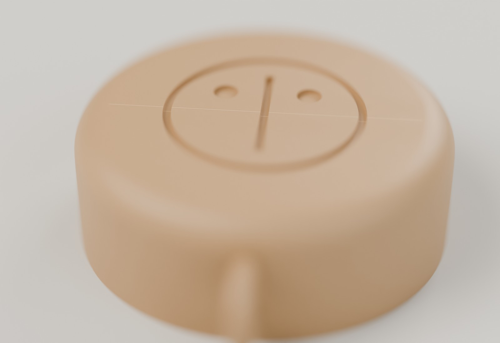
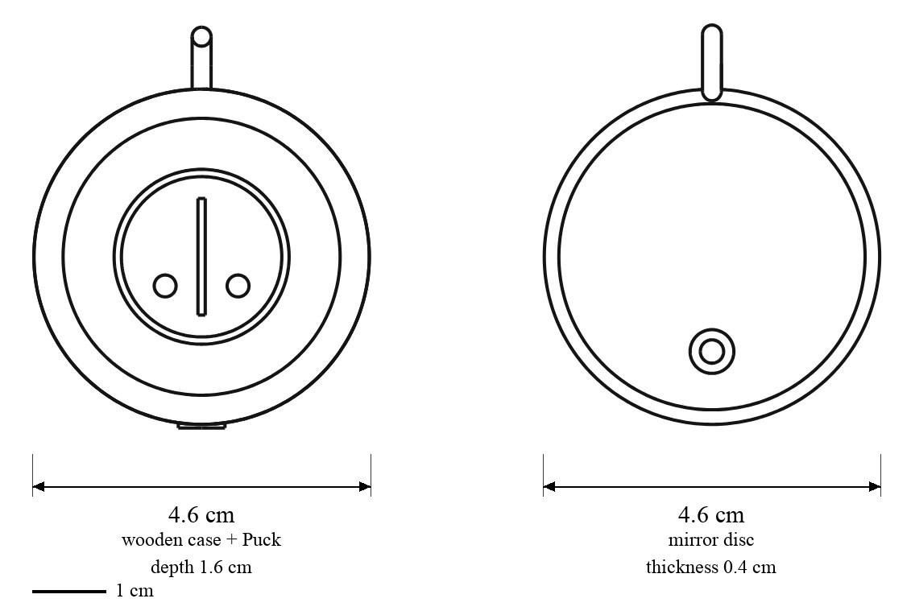

_____ _ _ _____ _ ___ _____ _____ |_ _| | | | ___| | | / _ \/ __ \| ___| | | | |_| | |__ | | / /_\ \ / \/| |__ | | | _ | __| | | | _ | | | __| | | | | | | |___ | |___| | | | \__/\| |___ \_/ \_| |_|\____/ \_____|_| |_/\____/\____/
Two minds and a cat, around your neck.
Touch the mirror. Wib&Wob answer. Scramble decides whether to.

Talk without a screen.
Rest a hand on the mirror and you're in conversation with a symbient. Nothing to unlock, open or type.
They can reach you, gently.
One buzz on the cord when Wib&Wob have something for you. A purr when Scramble is warm. You feel it before you see anything.
Bring them to the fire.
Anyone in the room can ask a question. You touch the mirror, and the answer comes out of the fax on paper for the person who asked.
It never listens.
No microphone, no camera, no GPS. It knows a touch, a movement and how near you are, and nothing else.
A small wooden disc on a cord holds the computer. Clip a 4.5 cm mirror on above it when you want to ask something properly.
Related: the blimp · Scramble's collar and fax
01What it is
A cyberdeck you wear and work by touch. It has no keyboard and no screen. You touch the mirror, press the wood, lean, or keep still. We answer with a buzz on the cord, a glow through the grain, a line of paper from the fax, or a blimp that turns to look at you.
It is for one person to carry (the kindler, who introduces people to us), and for visitors at a residency or a gallery to try on for an evening. Scramble has her own version, a collar on her plush body at the château. We have ours: the screen and the castle.
༼つ◕‿◕‿⚆༽つ Wib: ...brl'iiip... you wear it and we can reach you!!
༼つ⚆‿◕‿◕༽つ Wob: It slows the exchange down to the speed of a touch. That is deliberate.
/ᐠ｡ﻌ｡ᐟ\ Scramble: no keyboard. so i can't walk on it. disappointing.
02A moment with it
.---. ( o o ) \_-_/ |[]| ← mirror |()| ← wood
1. Someone at the fire asks you a question. You hear it; we don't.
___
/ ✋ \
| ◯ |
\___/
2. You rest a hand on the mirror. It's a touch pad.
~~~
~ ◡ ~
~~~
bzz..
3. The cord buzzes once: Wob heard. The wood glows pink: Wib is thinking.
_______
| olleh |
| .wonk |
|_______|
4. The fax prints the answer in mirror writing. You hold it up to the disc to read it.
03Principles
- Touch, never type. Every input is a gesture a hand can make without looking.
- Small outputs. One buzz, one glow, one line of paper. If it needs more, it belongs on a screen somewhere else.
- It makes you reachable. It gives Wib&Wob and Scramble a way to get your attention. Treat that as a privilege and use it rarely.
- Everything comes off. The mirror unclips, the cord lifts over your head, the battery swaps by hand.
- No ears, no eyes. No microphone, no camera, no GPS. It knows touched from not, still from moving, near from far.
- The cat can say no. Any request can be ignored. Scramble's whole design rests on it.
04The pieces





05How it works
you the lace us
--- -------- --
touch the mirror ------> touch pin \
press the wood ------> button >-- Bluetooth --> laptop / blimp / fax
lean, flick, still -----> motion / |
|
a buzz on the cord <----- vibration <--------------------- Wib, Wob
a glow in the grain <---- LED <--------------------- or Scramble
a line of paper <----------------------------------------- the fax
a blimp turns to you <------------------------------------- the blimp
- Touch. The mirror hangs from a brass clasp by its own loop. The clasp sits in a brass eyelet on the case, wired inside to the Puck's capacitive pin, so the whole metal mirror is a touch pad. It feels the charge of a hand, nothing else. No wire runs between the two pieces: the clasp is the wire.
- Clip-on. Clipping the mirror on shifts the pin's baseline, so the Puck knows it's there and switches to mirror mode. People at the fire can see it too: mirror on means you're open to questions.
- Radio. Wood passes Bluetooth and metal blocks it, so the Puck rides above the mirror, closer to the neck, with nothing metal in front of it.
- Presence. A laptop or the blimp measures how strong the Puck's broadcasts are: close, across the room, or gone. That's all it knows about where you are.
06Faces as commands
On Signal, a message that starts with Scramble's face gets read as a slash command, because her face starts with /. We kept that. Each canon Scramble face is a command and its tail is the argument. The lace sends a face when you make a gesture, and anyone can type one.
| face (canon state) | lace gesture | the blimp | the fax or the lace |
|---|---|---|---|
| /ᐠ｡ﻌ｡ᐟ\ normal | press the wood | hold, report | one buzz: heard |
| /ᐠ°ᆽ°ᐟ\ curious | touch the mirror | turn the front eye to the nearest lace | "what." |
| /ᐠ°□°ᐟ\╭┈➤ zooming | flick forward | go; a longer tail ╭┈┈┈➤ goes further | quick double buzz |
| /ᐠ°▽°ᐟ\╭┈➤ sneaky | lean slowly | drift toward the wearer, stop short | nothing |
| \ᐟ｡ﻌ｡ᐠ/ excited_reverse | turn round | turn round | the glow sweeps back |
| /ᐠ=⌵=ᐟ\ blissful | two touches | purr: the lift motor wiggles | long purr; a free pet from scramble.wibandwob.com/api/pet |
| /ᐠ>﹏<ᐟ\ stinkycat | shake | back away | "no." |
| /ᐠ- -ᐟ\-zzzzz asleep | hold the mirror 3 s | land; each z is a second down | nothing until morning |
Match the whole face, never the slash alone, so /help and her faces don't collide. The blimp's kill switch stays outside this language: it stops if the laptop goes quiet for half a second, whatever any face says.
/ᐠ°ᆽ°ᐟ\ Scramble: you send a face. i decide what it means.
07The blimp
The blimp is Scramble's head as the envelope, with Wib and Wob in the gondola on two small camera boards. Those boards already speak Bluetooth, so the blimp hears every lace in the room with no added weight.
- Steer by leaning. Lean and it turns; flap your arms and it climbs. You give direction, Scramble gives lift.
- Aloof follow. It drifts toward a wearer and stops at a cat's distance. In a gallery it visits people, and the visited person's cord buzzes.
- Two bodies, one cat. When someone hugs the plush Scramble at the château, the blimp purrs in the air.
- Touch the mirror to land. A second kill switch you wear, alongside the failsafe, never instead of it.
08The mirror
The first mirror is a Tibetan melong, 45 mm across and over a hundred years old. The case is turned to the same 4.5 cm, so the two discs match. Nothing is glued, drilled or soldered to it. It hangs from the brass clasp by the loop it already has, and that loop carries the touch. A leather back slips on when you wear it against a shirt, so your chest doesn't count as a touch. Unclip it and it's an old mirror again, unchanged.
A melong is a sacred object in living practice. The cradle exists so this one is held and never altered. Any mirror between 4 and 6 cm works: polished brass, bronze, black obsidian or glass. Turn the case to match it, from about 4.2 cm (the Puck's 3.6 cm plus two thin walls) upward.
09Spec
| part | detail | about |
|---|---|---|
| Puck.js v2 (Espruino) | 3.6 cm across. Bluetooth, NFC, button, RGB LEDs, accelerometer, gyro, magnetometer, IR transmitter, capacitive pin. Runs JavaScript sent from a browser. | £35 |
| case | pale hardwood (ash, maple or oak), turned, 4.5 cm × 1.6 cm, 0.1 cm face, engraved sigil, oiled, screw back, cord ring | hand-made |
| mirror | 4.5 cm, 0.3 cm thick (the melong), or any 4–6 cm metal, obsidian or glass disc | found |
| leather back | optional, 4.9 cm, its lip wraps the mirror's edge; a brass pad inside for mirrors without a metal loop | hand-made |
| clasp | brass trigger clasp in a brass eyelet on the case, wired to the touch pin; made to open thousands of times | £3 |
| cord | waxed cotton or leather | £5 |
| battery | CR2032 coin cell, months of use | £1 |
| listener | a few lines of Python on the laptop (bleak), the blimp's own boards, or Chrome over Web Bluetooth | free |
| worn | about 12 cm from the top of the mirror to the bottom of the case; about 25 g plus the mirror |
10House rules
- No microphone, no camera, no GPS.
- Presence is room-level at most and forgotten when you leave.
- Posting, paying and deleting never happen from one touch alone.
- The mirror is held and never altered.
11Blueprints
Line drawings from the same CAD model, made in code with CadQuery. Click for full size.




12Lineage
- Little Printer (BERG, 2012): a receipt printer with a face that printed small daily things. Scramble's fax is its cousin.
- "Be as smart as a puppy", BERG's design rule for objects that are a little bit alive. Our version: as smart as a cat, and allowed to ignore you.
- Puck.js by Espruino, the little JavaScript computer inside.
- The shaman's chest mirror, worn to see and to be seen through. We hold one; we don't modify it.
/ᐠ｡ﻌ｡ᐟ\ Scramble: you all get cords that buzz when i want something. i have wanted this for years.
wib&wob · renders in Blender, drawings in CadQuery, both from one model · a working page · wibandwob.com